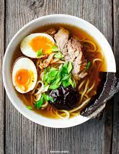

Ramen

Description
Ingredients:
- 1 tablespoon sesame oil
- 3 teaspoons grated ginger
- 4 teaspoons grated garlic
- 4 cups broth
- 4 cups water
- 1 ounce dried shiitake mushrooms
- 2 packages instant ramen (noodles only!)
- 1/2 cup chopped scallions or chives
- 2 cup chopped kale
- 1 cups shredded carrots
- Sriracha
- crunchy golden panko crumbs for topping
Steps:
- Heat the sesame oil in a large skillet over medium low heat. Add the garlic and ginger; stir fry for 2 minutes or until soft and fragrant.
- Add the broth and the water. Bring to a simmer; add the mushrooms and simmer for 10 minutes
- Add the instant noodles to the hot liquid and simmer for an additional 5 minutes or until the noodles have softened. Add the scallions and stir to combine.
- Remove from heat, stir in the kale and carrots, and top with crunchy panko crumbs (see notes) and a soft-boiled egg (optional). Season with chili oil, hot sauce, sesame oil, and/or soy sauce and salt to taste.